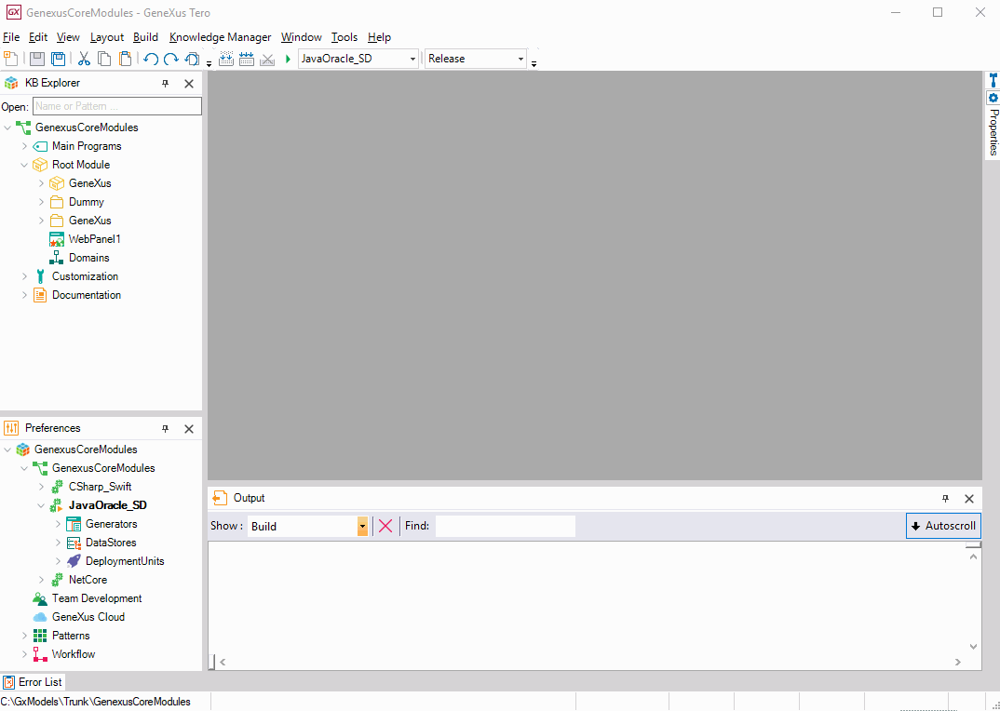

Sometimes you need a simple task, like emptying a directory or moving a file from your network to your target folder before a build, or maybe copy some files to a different location once the build is complete. If that’s your case, you probably created a bat file which you run (when you remember) to do so. Build Events to the rescue.'Build Events' is a new feature that allows you to program simple tasks on the before and after build events.  Note: All these commands will be saved in your Environment, so if you commit your Environment properties they will travel back and forth to your Genexus Server. MSBuild tasks take them in account too. Pre-build event command line:This is where you want to write the commands that need to run before a build. Keep in mind that if any of these commands fail, the build will be canceled. Post-build event command line:This is where you will write your commands that will run after a build is completed, depending on the selection of the “Run the post-build event” which can be either “Always” or “On successful build”, and the status of the build event. These will not modify the state of a build action.
UsageYou may use this feature for things like
AvailabilityThis feature is available as of GeneXus 15 upgrade 12 |
| Backlinks |
| Manually configuring Tomcat |